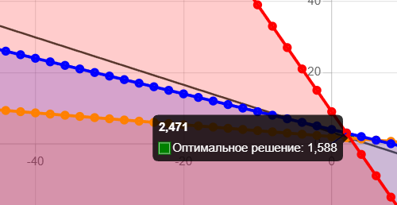
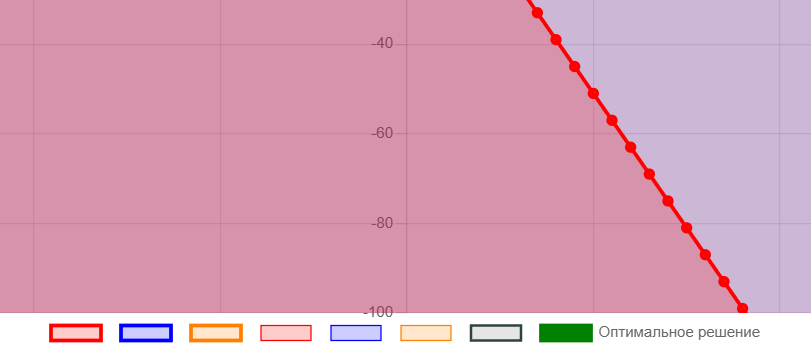
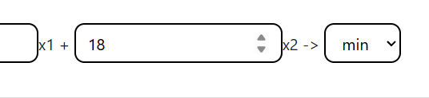
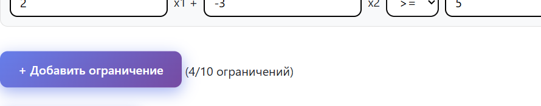
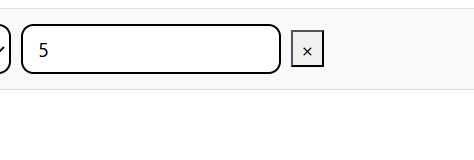

У вас, скорее всего, могут возникнуть проблемы с определением координат при первом решении задачи в нашем инструменте.
Так вот, запоминайте: верхнее число обозначает координату точки на оси X, нижнее число, находящееся рядом с цветным квадратом, обозначающим принадлежность точки к определенной прямой, обозначает координату точки на оси Y.

После решения задачи для того, чтобы увидеть ответ, вам надо всего лишь навестись на большую зеленую точку на графике.
Правило определения координат точки оптимального решения такое же, как и у определения координат обычной точки.
Также наш инструмент слегка чересчур точен, мы пока работаем над этим, поэтому округляйте результат до целого числа, спасибо!

Внизу под графиком находятся цветные прямоугольники.
С их помощью вы можете убирать и обратно возвращать определенные элементы решения, как линии ограничений, так и заливку, без лишней попытки заново обновлять.
Убирая элементы, вы всего лишь их скрываете, никак не влияя на оптимальное решение.
Прямоугольники с более жирной обводкой обозначают линии ограничений, прямоугольники с тонкой обводкой - заливку.
Темно-зеленый обведенный прямоугольник обозначает линию функции, а зеленый полностью закрашенный прямоугольник - точку оптимального решения.

Вместо того, чтобы вручную вводить данные, вы можете вводить их с помощью стрелочек!

Изначально дается три ограничения. Вы можете добавить еще до 10 ограничений, нажав на кнопку "Добавть ограничение".

Добавив ограничения, вы можете их удалить, нажав на специальную кнопку.